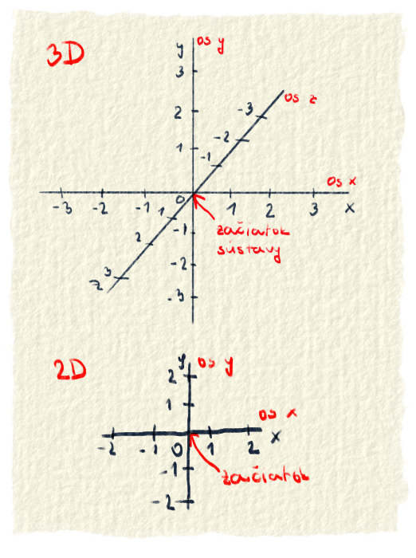
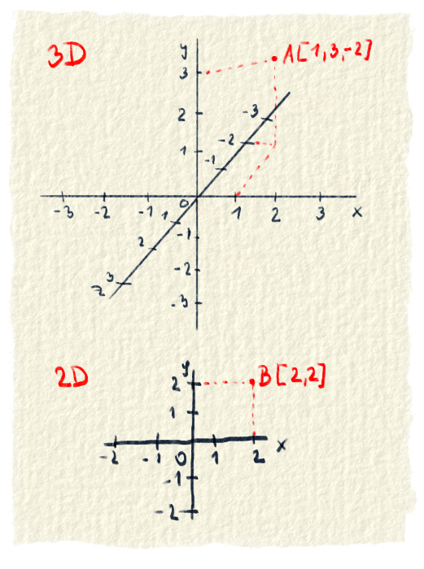

Sústavu súradníc ani slovami opísať nevieme, tak hneď začneme obrázkom.

Obr. 1.: Karteziánska súradnicová sústava. Hore je pre trojrozmerný priestora dolu pre dvojrozmerný priestor
To čo je na obrázku sa nazýva Karteziánska súradnicová sústava. Je to najpoužívanejší typ a bežne sa s ním môžeš stretnúť v rôznych článkoch, kde sú nejaké grafy. Karteziánska preto, lebo Descartes. Minule sme si o tomto človiečikovi napísali viac, tak teraz len v skratke. René Descartes bol francúzsky matematik, ktorý sa zaoberal analytickou geometriou. Jeho meno je po latinsky Renatus Cartesius a súradnicová sústava je pomenaovaná na jeho počesť.
Súradnicová sústava sa skladá z osí, ktoré prechádzajú začiatkom. Osí je toľko, koľko je rozmerný priestor. Sú na seba kolmé. Pre každú os treba na nej vyznačiť jednotky. Osi môžu mať rôzne jednotky. Jedna os môže zobrazovať metre, druhá centimetre a tretia sekundy. Karteziánsky súradnicový systém môžeš vidieť v geometrií, pri matematických funkciách, vo fyzike pri znázorňovaní vzťahov, pri rôznych grafoch, ale aj v počítačovej grafike.
Bod
V súradnicovej sústave vieme zobraziť body. Každý bod má presné súradnice, kde sa v danom priestore nachádza. Súradnice zapisujeme do hranatých zátvoriek. Najprv sa zapíše súradnica na osi x, potom na osi y a ak je, tak nakoniec na osi z. Body označujeme veľkými písmenami.

Obr. 2.: Súradnice bodu sa značia ako A[x,y,z]. Bod B je iba v dvorozmernom priestore, tak súradnica z mu chýba.